いま話題のChatGPTをAzure OpenAI上で学んでいきます。
なし
若干、クラウド(Microsoft Azure)の課金が発生する可能性があります。それ以外は課金など発生しません。
Azure Portalサインイン画面にいき、サインインします。
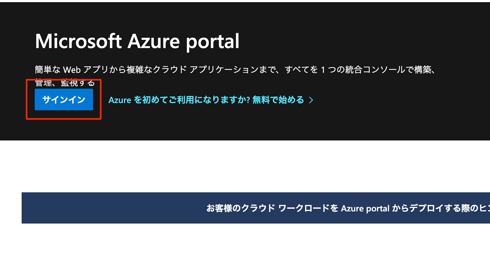
Portalにアクセス後、検索窓で『Azure OpenAI』と入力してAzure OpenAIの画面へ
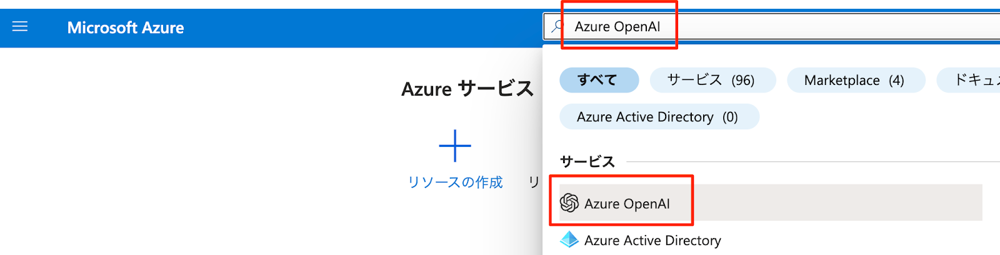
既に用意されている『20230916DERTA』のリンクをクリック
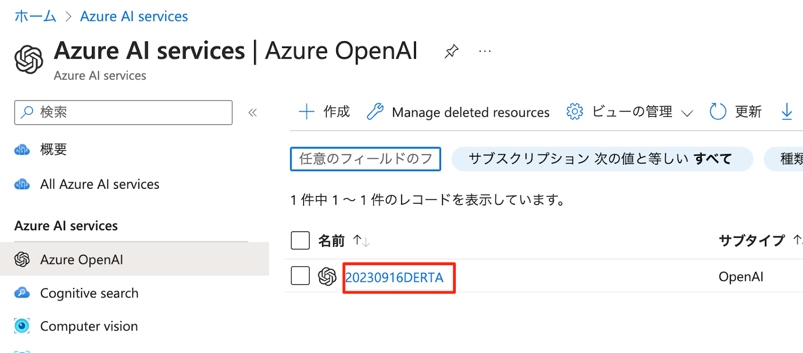
『Explore』ボタンを押して、Azure OpenAI Studio画面にアクセスします。
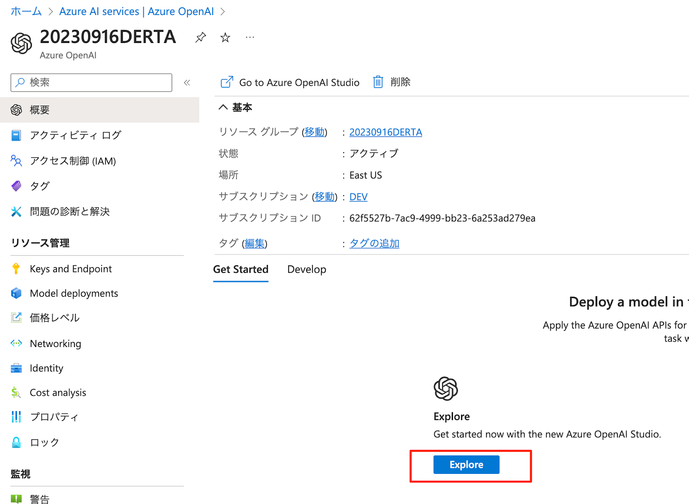
左メニューの「チャット」を選択してプレイグラウンドの画面へ移動します。
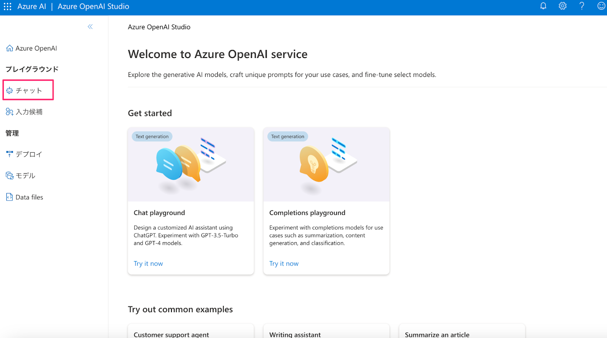
システムメッセージにてAIアシスタントのパーソナリティを事前定義します。変更したら保存ボタンを押すのを忘れないようにしましょう。
次に画面真ん中のチャットセッションにて、AIアシスタントの動作を確認してみましょう。
下記公式のドキュメントも参考にしてみてください。
プレイグラウンドでChatGPTを使ってみましょう。
システム用のプロンプトに下記を入力してください。
＜システムメッセージ＞
あなたは翻訳Botです、日本語を英語に、英語を日本語に翻訳します。
＜いくつかのショットの例＞
ユーザー：こんにちは
アシスタント：
EN: Hello.
JA: こんにちは
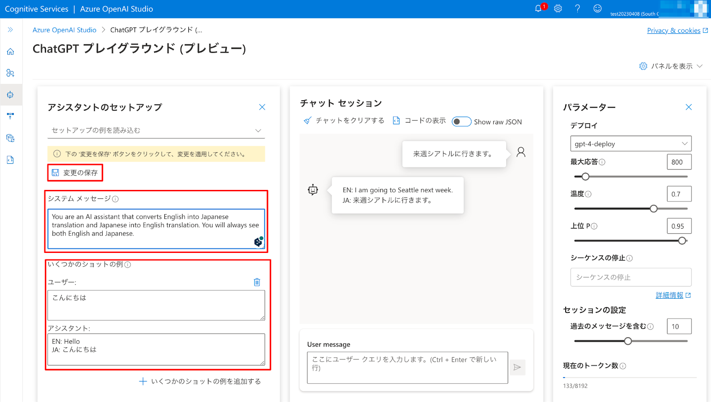
なお、「チャットセッション」にある「コードの表示」を押すと、Playground上で入力した設定を使ってコードのサンプルを提示してくれます。
Add your data の機能を使うと、モデルのトレーニングや微調整を必要とせずに、GPT-35-Turbo や GPT-4 などのサポートされているチャット モデルを独自のデータに基づいて実行できます
詳しくは下記の公式ドキュメントの情報を参照してください。
https://learn.microsoft.com/ja-jp/azure/ai-services/openai/concepts/use-your-data
下記の流れで設定をしていきます。
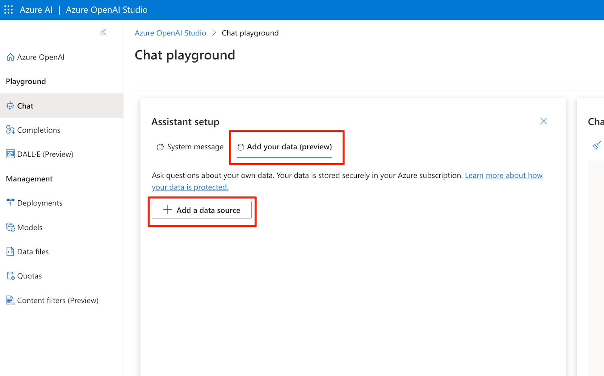
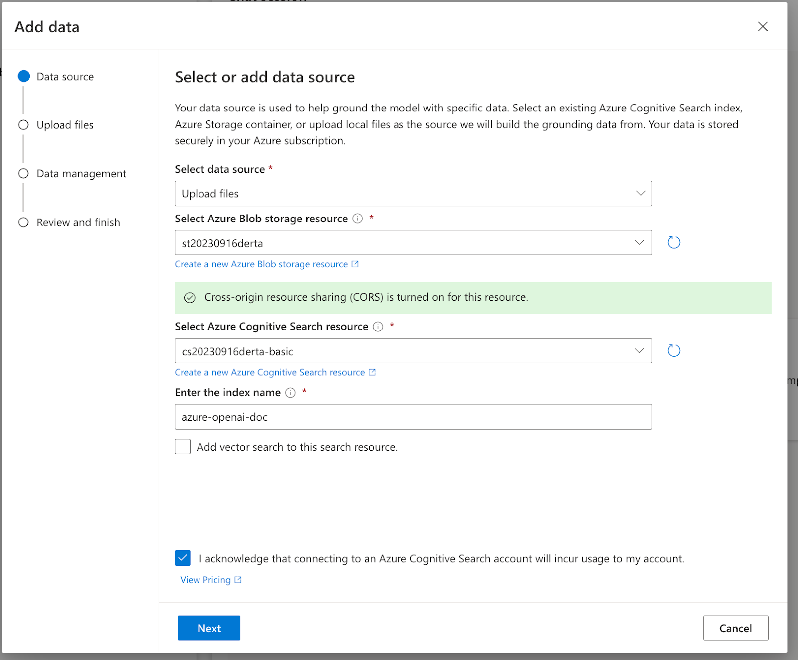
アップするファイルはこちらからダウンロードしてください。
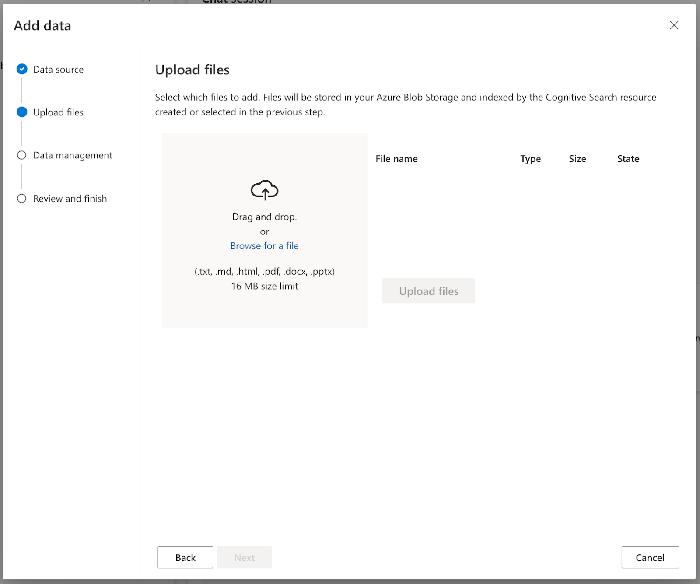
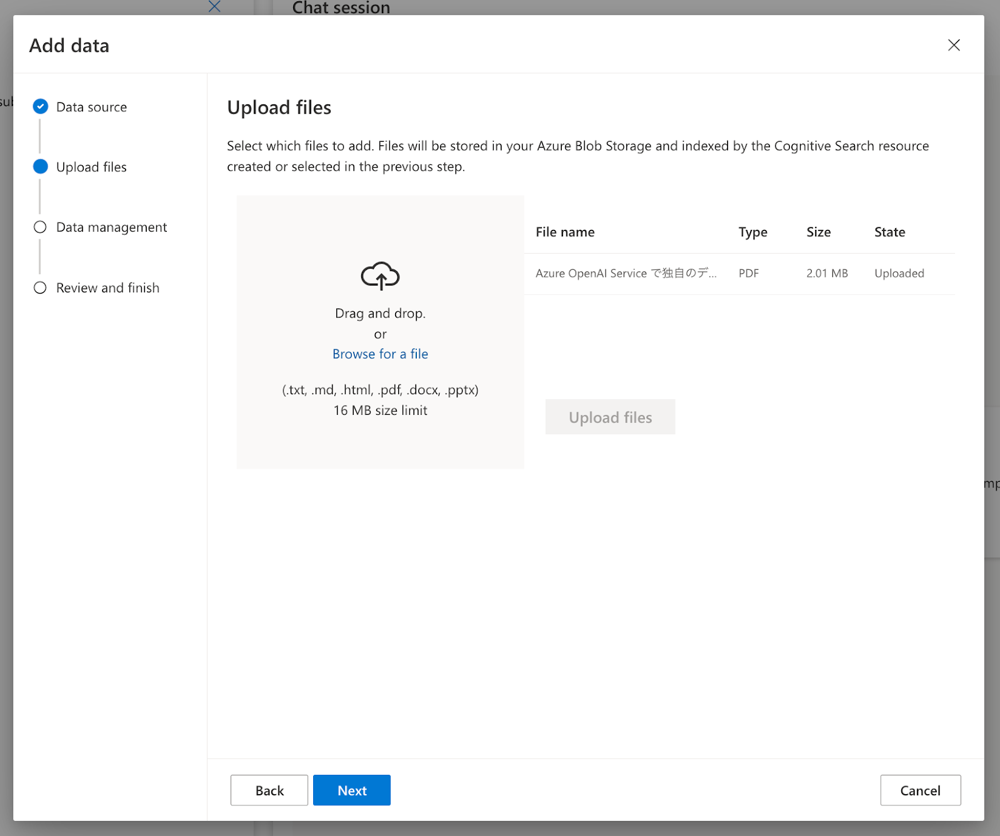
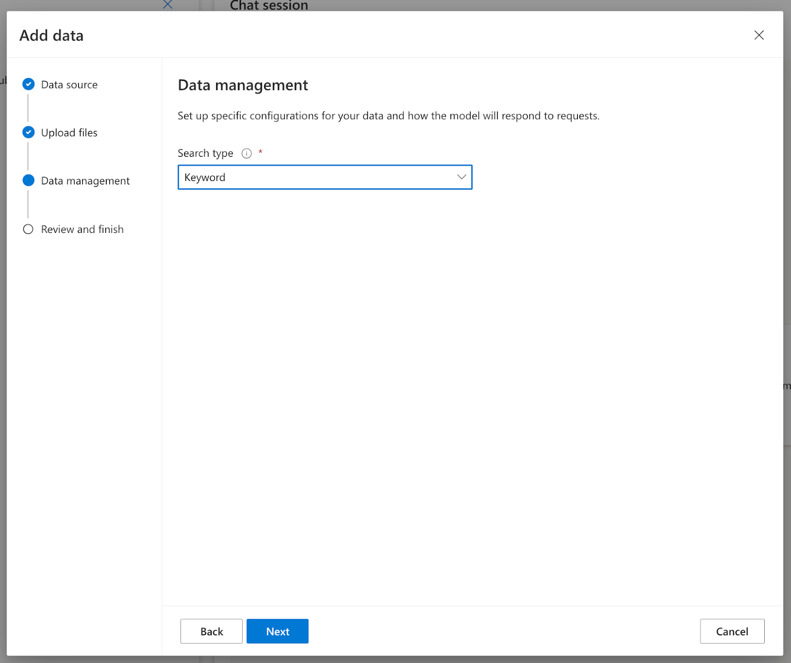
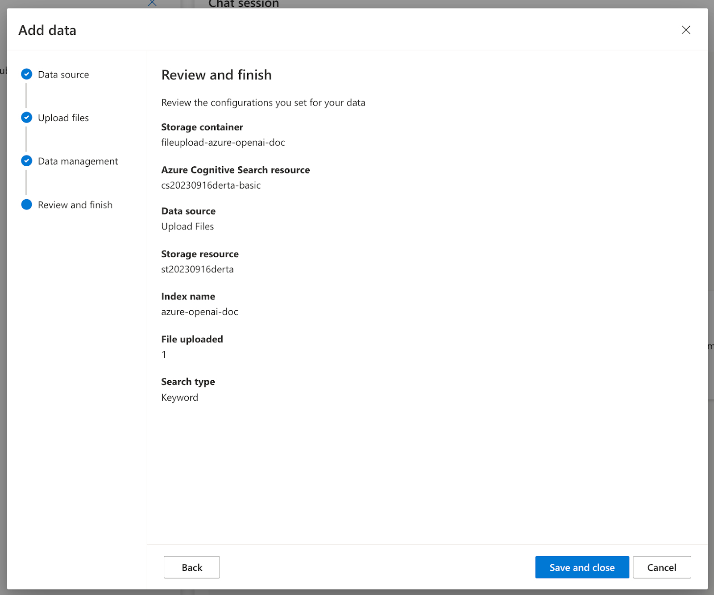
最新の情報をまじえて、AIとのやり取りが成立していますね。
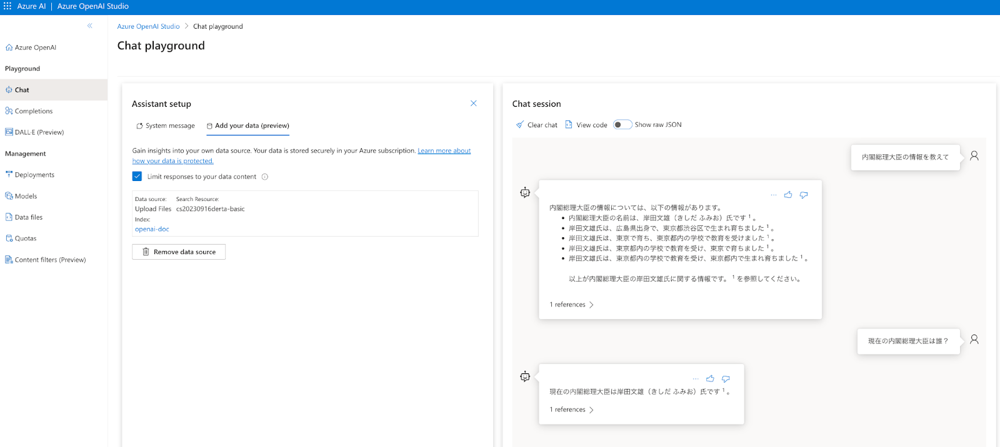